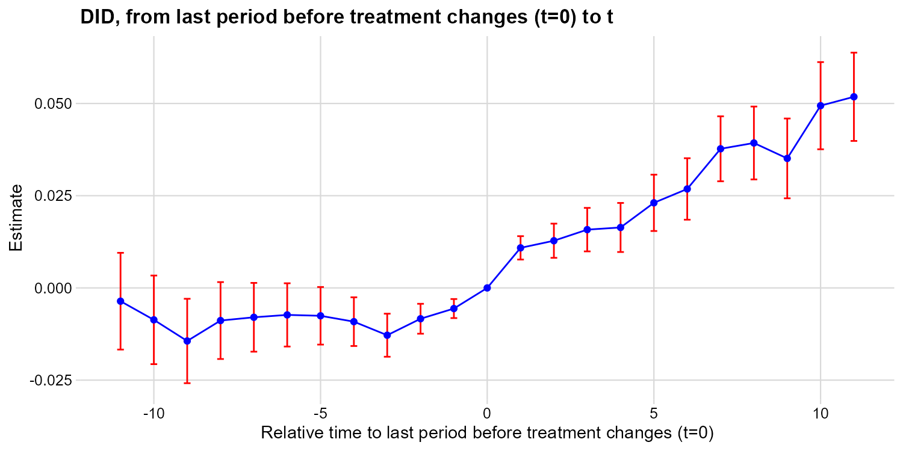
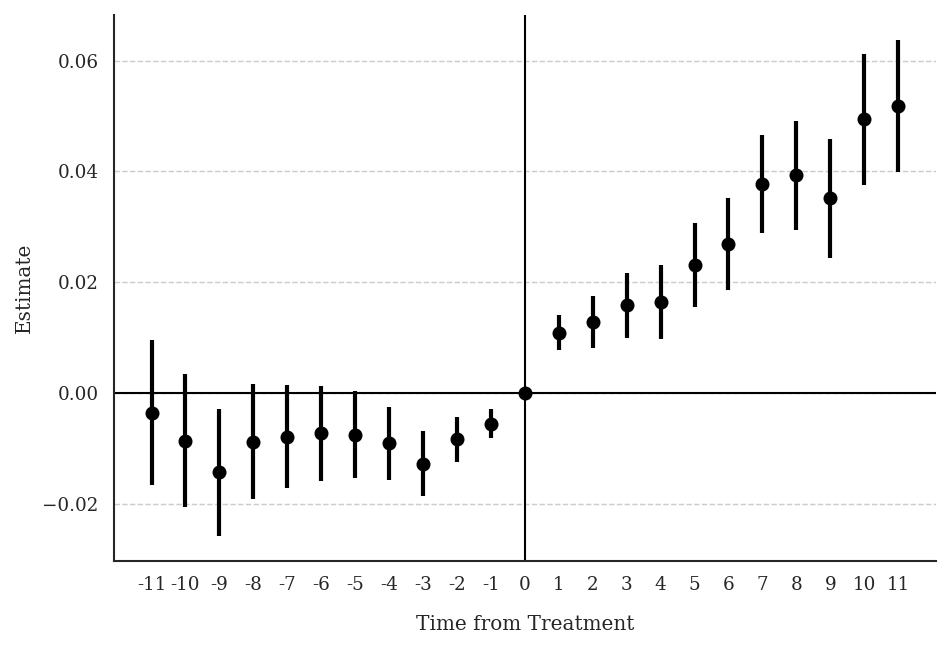
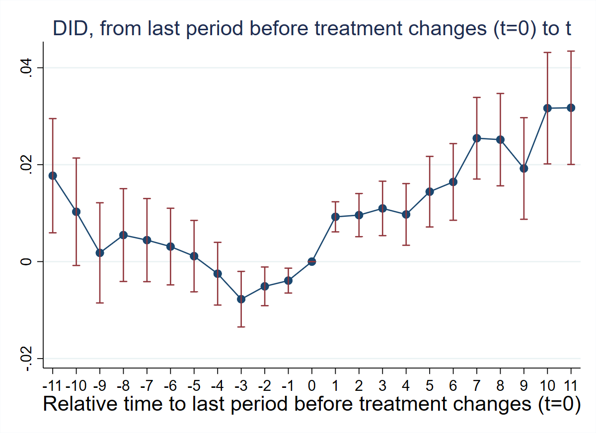
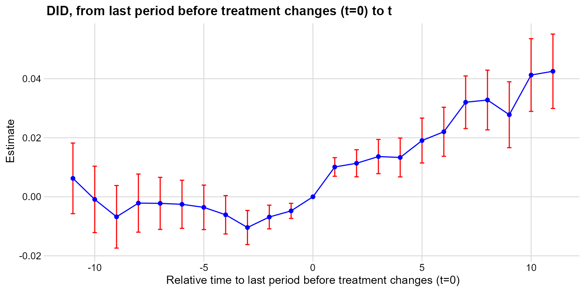
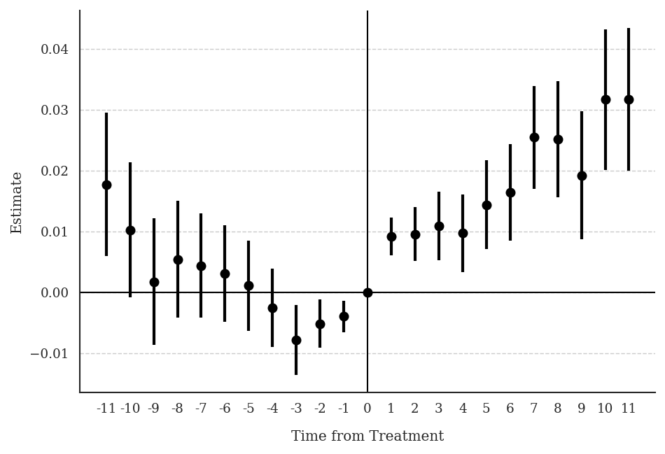

1 Chapter 9: Deryugina (2017) — Hurricane Hits and Government Transfers
Research Question: How do hurricanes affect non-disaster government transfer programs in the United States?
Data: County-year panel. Treatment hurricane is binary and non-absorbing (counties are treated for at most one year — a “one-shot” design). Outcome: log_curr_trans_ind_gov_pc (log non-disaster government transfers per capita).
1.1 T1: Verify One-Shot Design
use "Deryugina_2017.dta", clear
egen total_hurricane = total(hurricane), by(county_fips)
sum total_hurricane Variable | Obs Mean Std. dev. Min Max
-------------+---------------------------------------------------------
total_hurr~e | 49,698 .3163709 .4650642 0 1All counties have total_hurricane ∈ {0, 1} — confirming the one-shot design.
library(haven)
library(dplyr)
df <- read_dta("C:/data/Deryugina_2017.dta")
df %>%
group_by(county_fips) %>%
summarise(total_hurricane = sum(hurricane, na.rm = TRUE)) %>%
summarise(
mean = mean(total_hurricane),
sd = sd(total_hurricane),
min = min(total_hurricane),
max = max(total_hurricane)
)# A tibble: 1 × 4
mean sd min max
<dbl> <dbl> <dbl> <dbl>
1 0.316 0.465 0 1All counties have total_hurricane ∈ {0, 1} — confirming the one-shot design.
import pandas as pd
df = pd.read_stata("C:/data/Deryugina_2017.dta")
total = (
df.groupby("county_fips")["hurricane"]
.sum()
.reset_index(name="total_hurricane")
)
print(total["total_hurricane"].describe())count 4518.000000
mean 0.316371
std 0.465064
min 0.000000
max 1.000000All counties have total_hurricane ∈ {0, 1} — confirming the one-shot design.
1.2 T2: Non-Normalized Event-Study Effects (No Controls)
did_multiplegt_dyn log_curr_trans_ind_gov_pc county_fips year hurricane, ///
effects(11) placebo(11) cluster(county_fips)
graph export "ch09_fig1_hurricane_nocontrols.png", replace width(1200)--------------------------------------------------------------------------------
Estimation of treatment effects: Event-study effects
--------------------------------------------------------------------------------
| Estimate SE LB CI UB CI N Switchers
-------------+------------------------------------------------------------------
Effect_1 | .0108629 .001617 .0076937 .0140321 14240 361
Effect_2 | .0127918 .0023651 .0081563 .0174273 13953 361
Effect_3 | .0158005 .0030075 .0099059 .021695 13766 361
Effect_4 | .0163886 .003393 .0097385 .0230388 13620 361
Effect_5 | .0230699 .0038968 .0154322 .0307076 13462 361
Effect_6 | .0268285 .0042508 .0184972 .0351598 13253 361
Effect_7 | .0377147 .0044926 .0289095 .04652 13038 361
Effect_8 | .0392922 .0050394 .0294151 .0491694 12929 361
Effect_9 | .035109 .0055185 .0242929 .0459251 12840 361
Effect_10 | .0494016 .006029 .0375849 .0612182 12741 361
Effect_11 | .0518123 .0061055 .0398457 .0637788 12619 361
--------------------------------------------------------------------------------
Test of joint nullity of the effects : p-value = 0
Av_tot_eff | .3190721 .0406001 .2394973 .3986468 31470 3971
Average number of time periods over which a treatment's effect is accumulated = 11
--------------------------------------------------------------------------------
Testing the parallel trends and no anticipation assumptions
--------------------------------------------------------------------------------
| Estimate SE LB CI UB CI N Switchers
-------------+------------------------------------------------------------------
Placebo_1 | -.0055903 .0013173 -.008172 -.0030085 14154 361
Placebo_2 | -.0083554 .0020689 -.0124104 -.0043003 13826 361
Placebo_3 | -.0128183 .002977 -.0186532 -.0069834 13567 361
Placebo_4 | -.009143 .0033686 -.0157454 -.0025406 13302 361
Placebo_5 | -.0075546 .0039816 -.0153585 .0002493 13005 361
Placebo_6 | -.0073115 .0043748 -.015886 .001263 12682 361
Placebo_7 | -.0079583 .0047566 -.0172812 .0013645 12431 361
Placebo_8 | -.008841 .0053184 -.0192648 .0015829 12214 361
Placebo_9 | -.0143816 .0058363 -.0258204 -.0029427 11829 361
Placebo_10 | -.0086498 .0061281 -.0206606 .0033611 10807 299
Placebo_11 | -.0035924 .0066904 -.0167053 .0095206 10012 282
--------------------------------------------------------------------------------
Test of joint nullity of the placebos : p-value = 1.517e-06
library(DIDmultiplegtDYN)
library(polars)
res_t2 <- did_multiplegt_dyn(
df = df,
outcome = "log_curr_trans_ind_gov_pc",
group = "county_fips",
time = "year",
treatment = "hurricane",
effects = 11,
placebo = 11,
cluster = "county_fips"
)
print(res_t2) Av_tot_eff | 0.3190721 0.0406001 0.2394973 0.3986468 31470 3971
Test of joint nullity of the effects : p-value = 0.0000000
Test of joint nullity of the placebos : p-value = 0.0000015
from did_multiplegt_dyn import did_multiplegt_dyn
res_t2 = did_multiplegt_dyn(
df = df,
outcome = "log_curr_trans_ind_gov_pc",
group = "county_fips",
time = "year",
treatment = "hurricane",
effects = 11,
placebo = 11,
cluster = "county_fips"
)
print(res_t2) Av_tot_eff | 0.319072 0.040600 0.239497 0.398647 31470 3971
Average number of time periods over which a treatment's effect is accumulated = 11
Test of joint nullity of the effects : p-value = 0.000000
Test of joint nullity of the placebos : p-value = 0.000002
Interpretation: Effects are positive and increasing — hurricanes raise non-disaster transfers by ~1% in the short run and ~5% in the long run. The pre-trend test is highly significant (p ≈ 1.5e-06), suggesting a differential trend starting ~4 periods before treatment. The parallel-trends assumption is likely violated without controls.
1.3 T3: Non-Normalized Event-Study Effects (With County-Level Controls)
local vars coastal land_area1970 log_pop1969 frac_young1969 frac_old1969 ///
frac_black1969 log_wage_pc1969 emp_rate1969
local controls
foreach v of local vars {
gen `v'_year = `v' * year
local controls `controls' `v'_year
}
did_multiplegt_dyn log_curr_trans_ind_gov_pc county_fips year hurricane, ///
effects(11) placebo(11) cluster(county_fips) controls(`controls')
graph export "ch09_fig2_hurricane_controls.png", replace width(1200) Av_tot_eff | .2036597 .038535 .1281326 .2791869 31123 3971
Test of joint nullity of the effects : p-value = 0
Test of joint nullity of the placebos : p-value = 3.280e-07
vars <- c("coastal", "land_area1970", "log_pop1969", "frac_young1969",
"frac_old1969", "frac_black1969", "log_wage_pc1969", "emp_rate1969")
for (v in vars) df[[paste0(v, "_year")]] <- df[[v]] * df$year
controls_list <- paste0(vars, "_year")
res_t3 <- did_multiplegt_dyn(
df = df,
outcome = "log_curr_trans_ind_gov_pc",
group = "county_fips",
time = "year",
treatment = "hurricane",
effects = 11,
placebo = 11,
cluster = "county_fips",
controls = controls_list
)
print(res_t3) Av_tot_eff | 0.2658500 0.0412300 0.1850394 0.3466606 31123 3971
Test of joint nullity of the effects : p-value = 0.0000000
Test of joint nullity of the placebos : p-value = 0.0000003
vars_list = ["coastal", "land_area1970", "log_pop1969", "frac_young1969",
"frac_old1969", "frac_black1969", "log_wage_pc1969", "emp_rate1969"]
for v in vars_list:
df[f"{v}_year"] = df[v] * df["year"]
controls_list = [f"{v}_year" for v in vars_list]
res_t3 = did_multiplegt_dyn(
df = df,
outcome = "log_curr_trans_ind_gov_pc",
group = "county_fips",
time = "year",
treatment = "hurricane",
effects = 11,
placebo = 11,
cluster = "county_fips",
controls = controls_list
)
print(res_t3) Av_tot_eff | 0.203660 0.038535 0.128133 0.279187 31123 3971
Test of joint nullity of the effects : p-value = 0.000000
Test of joint nullity of the placebos : p-value = 0.000000
Interpretation: After including controls, effects remain positive and significant (Av_tot_eff ≈ 0.204–0.266 vs. 0.319 without controls). Pre-trends improve but the joint test remains significant (p ≈ 3.3e-07), suggesting a persistent differential trend even after conditioning on covariates.